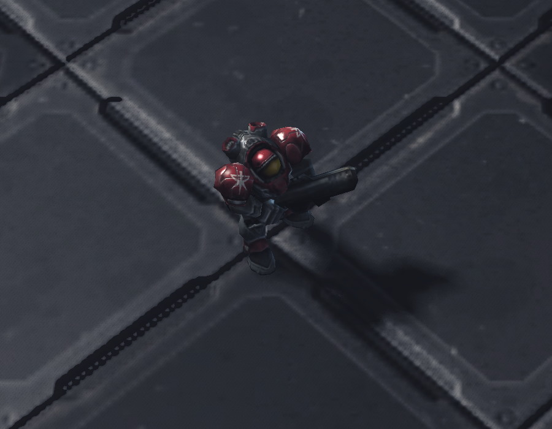
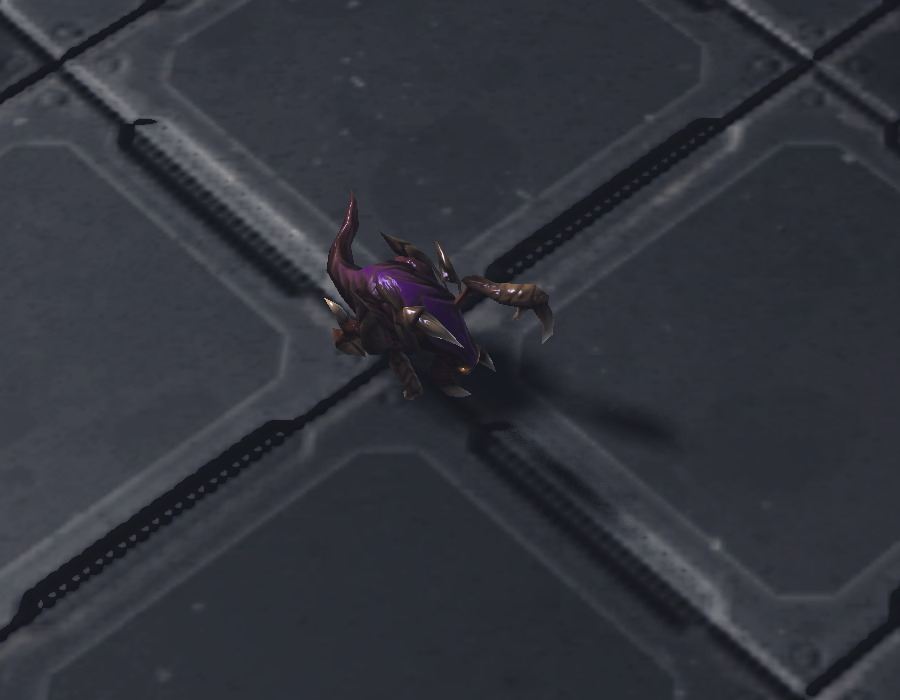

Welcome to StarCraft II Universe
Discover the epic battles between Terran, Protoss and Zerg.
Choose your race, master the units, and conquer the galaxy!
Terran – Masters of Technology
Terrans are resilient humans relying on powerful machines and tactical flexibility.

Key Units:
- Marine – versatile infantry with Stimpack ability
- Marauder – armored soldier effective vs structures
- Banshee – cloaked air unit specialized in harassment
Terran Wiki
Protoss – Advanced Alien Civilization
Protoss wield advanced technology and powerful psionic abilities.
Key Units:
- Zealot – melee warrior with Charge ability
- Stalker – ranged unit with Blink teleport
- Colossus – massive robot with thermal lances
Protoss Wiki
Zerg – Swarm of the Void
Zerg are relentless, evolving creatures overwhelming enemies with sheer numbers.

Key Units:
- Zergling – fast melee attacker, spawns in pairs
- Hydralisk – ranged attacker with deadly spikes
- Ultralisk – giant tank-like beast with massive cleavers
Zerg Wiki